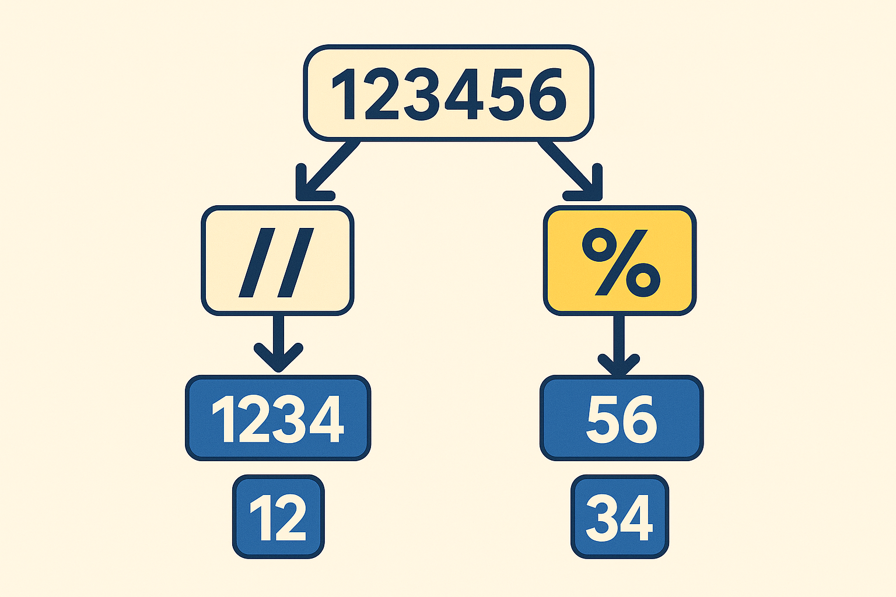

Numeric Parsing in Python with Integer Division and Modulus

When you need to parse a number, the first instinct is often to convert it to a string and slice it. That works well for data that comes from people — like phone numbers, credit cards, or postal codes — where formatting and leading zeros matter. But when you are working with raw numeric data that is guaranteed to be fixed-width and free of formatting, numeric parsing with integer division (//) and modulus (%) is the better option.
String parsing is flexible, but numeric parsing is faster and cleaner when the data is truly numeric.
Integer Division (//) ✂️
The // operator divides one number by another and returns only the integer part, discarding the remainder:
print(17 // 5) # 3
It’s a great way to chop off digits from the right side of a number and keep working with what’s left.
Modulus (%) 🔄
The % operator gives you the remainder:
print(17 % 5) # 2
It’s the tool you reach for when you want to peel off the last digits.
Example 1: Warehouse Codes 📦
Imagine a six-digit warehouse code where the first two digits are the region, the next two are the aisle, and the last two are the bin:
code = 120534
bin_num = code % 100 # 34
code //= 100 # 1205
aisle = code % 100 # 05
region = code // 100 # 12
Numeric vs String Parsing
| Task | Numeric Parsing (// and %) |
String Parsing (slicing) |
|---|---|---|
| Extract bin | code % 100 → 34 |
str(code)[-2:] → “34” |
| Extract aisle | (code // 100) % 100 → 05 |
str(code)[2:4] → “05” |
| Extract region | code // 10000 → 12 |
str(code)[:2] → “12” |
Why numeric parsing is better here:
- No type conversion needed.
- Values stay as integers (not strings), ready for math or comparisons.
- More direct and less error-prone than juggling string slices.
Example 2: Timestamps in Milliseconds ⏱️
Suppose you have a timestamp in milliseconds and you want to break it into hours, minutes, seconds, and leftover milliseconds.
ms = 12_345_678
seconds = ms // 1000 # 12345
milliseconds = ms % 1000 # 678
minutes = seconds // 60 # 205
seconds = seconds % 60 # 45
hours = minutes // 60 # 3
minutes = minutes % 60 # 25
# Output: 3 25 45 678**
print(hours, minutes, seconds, milliseconds)
Why numeric parsing is better here:
- Time math is inherently numeric.
- Avoids string padding or slicing headaches.
%and//match the way we already reason about time.
Example 3: Digit Processing for Checksums 🔢
Many algorithms (like the Luhn algorithm for credit card checksums) require iterating over each digit of a number. With % and //, you can peel digits off one at a time:
num = 987654
# Output: 4 5 6 7 8 9
while num > 0:
digit = num % 10
print(digit)
num //= 10
Why numeric parsing is better here:
- Digits come off in a loop without string conversion.
- Faster for large datasets since no new strings are created.
- Works naturally in calculations where digits are numbers, not characters.
Closing Thoughts 💡
- Use
//to chop digits from the right. - Use
%to peel digits from the right. - Numeric parsing is best when the data is purely numeric, fixed-width, and not meant to preserve formatting.
Examples like warehouse codes, timestamps, and checksum digit processing highlight where numeric parsing outshines string slicing. If the data is messy or formatting matters, use string parsing. If the data is clean and fixed, numeric parsing is not just elegant. It’s the right tool.